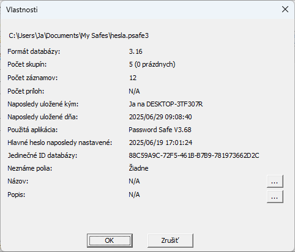
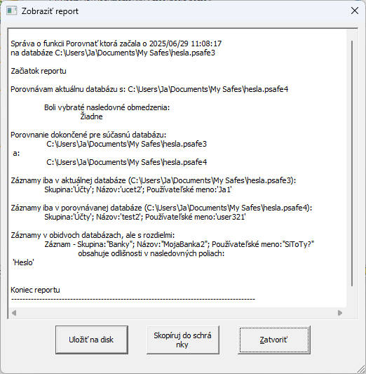

Menu Súbor obsahuje možnosti súvisiace so správou a vytváraním nových Password Safe databáz.
Vytvorí novú prázdnu databázu.
Otvorí existujúcu databázu. Keď sa zobrazí dialógové okno Otvoriť, môžete určiť či sa má existujúca databáza otvoriť v režime Čítanie/Zápis alebo Iba na čítanie. Po otvorení sa aktuálny stav zobrazí v stavovom riadku v dolnej časti okna Password Safe. Používateľ môže kedykoľvek potom dvakrát kliknúť na túto časť stavového riadka a prepínať medzi týmito dvoma režimami alebo použiť položku ponuky v menu "Súbor". Prepnutie databázy do režimu Čítanie/Zápis nemusí byť možné, ak má už iný používateľ tú istú databázu momentálne otvorenú v režime Čítanie/Zápis. Namiesto dvojitého kliknutia na stavový riadok môžete použiť aj príslušnú položku v menu "Súbor".
Zatvorí aktuálne otvorenú databázu bez ukončenia aplikácie.
V závislosti od toho, či používateľ povolil používanie systémovej lišty (System Tray), sa aktuálne otvorená databáza uzamkne buď na paneli úloh (kliknutím ľavým tlačidlom myši zobrazíte dialógové okno na odomknutie), alebo na systémovej lište (kliknutím pravým tlačidlom myši zobrazíte kontextovú ponuku, kde môžete obnoviť databázu alebo ju len odomknúť). Na opätovné otvorenie/odomknutie databázy bude potrebné hlavné heslo. Tlačidlo Zamknúť je možné umiestniť aj na panel s nástrojmi pomocou prispôsobenia panela s nástrojmi (kliknutím pravým tlačidlom myši na panel s nástrojmi).
Táto časť menu Súbor môže obsahovať zoznam nedávno otvorených súborov databázy.
Táto sekcia bude prázdna, ak ide o prvé použitie
Poznámky:
Uloží akékoľvek zmeny v aktuálnej databáze. Ak od predchádzajúceho uloženia neboli vykonané žiadne zmeny alebo ak bola databáza otvorená iba na čítanie, táto možnosť bude sivá.
Uloží kópiu aktuálnej databázy pod novým názvom alebo do iného umiestnenia.
Exportuje obsah aktuálnej databázy do externého súboru v starom formáte databázy Password Safe,
do XML súboru alebo ako obyčajný text. Ak je práve aktívny filter, môžete exportovať iba zobrazené záznamy ktoré spĺňajú
podmienky filtra, do databázy Password Safe.
V tomto prípade, ak je vo výsledkoch filtra zahrnutý alias alebo odkaz, jej základný
záznam sa tiež exportuje, aj keď tieto podmienky nespĺňa.
Procesom exportu vás prevedie sprievodca, môžete napr. vybrať ktoré polia sa budú brať do úvahy, alebo obmedziť ktoré záznamy sa budú exportovať.
Viac informácií o exporte databázy do iných formátov nájdete tu.
Viac informácií ohľadom voľby "Pokročilé kritériá výberu polí" nájdete v téme Pokročilé nastavenia pri spustení sprievodcu.
Importuje obsah predtým exportovaného alebo správne
naformátovaného textového súboru, XML súboru alebo databázy hesiel KeePass V1 do aktuálnej databázy.
Viac informácií o importovaní textových súborov nájdete tu.
Zlúči databázu Password Safe alebo záložný súbor (.bak) do aktuálnej databázy.
Táto operácia nie je prístupná ak je aktuálna databáza v režime iba na čítanie. Procesom zlúčenia vás prevedie sprievodca,
môžete napr. vybrať ktoré polia sa budú brať do úvahy, alebo obmedziť ktoré záznamy zlúčite do aktuálnej databázy.
Viac informácií ohľadom voľby "Pokročilé kritériá výberu polí" nájdete v téme Pokročilé nastavenia pri spustení sprievodcu.
Porovná aktuálne otvorenú databázu s inou. Procesom porovnania vás prevedie sprievodca,
môžete napr. obmedziť ktoré záznamy a ktoré polia týchto záznamov sa budú porovnávať medzi týmito dvoma databázami.
Viac informácií o zobrazení výsledkov procesu porovnania nájdete v téme Výsledky porovnania databáz.
Viac informácií ohľadom voľby "Pokročilé kritériá výberu polí" nájdete v téme Pokročilé nastavenia pri spustení sprievodcu.
Synchronizuje aktuálne otvorenú databázu s inou.
Hlavný rozdiel medzi zlúčením a synchronizáciou je v tom, že počas zlúčenia
sa všetky záznamy zlúčenej databázy prenesú do aktuálne otvorenej databázy.
Počas synchronizácie sa však aktualizujú iba záznamy v aktuálne otvorenej databáze.
Synchronizáciou vás prevedie sprievodca, môžete napr. obmedziť ktoré záznamy a ktoré polia týchto záznamov
synchronizujete medzi týmito dvoma databázami.
Viac informácií o zobrazení výsledkov procesu porovnania nájdete v téme Výsledky porovnania databáz.
Databázu, ktorá je otvorená na čítanie a zápis (predvolená hodnota), je možné chrániť pred neúmyselnými zmenami výberom položky Zmeniť na R-O. Podobne je možné databázu iba na čítanie začať upravovať po výbere položky Zmeniť na R/W. Pri zmene na čítanie aj zápis sa zobrazí výzva na zadanie hlavného hesla. Medzi týmito režimami môžete prepínať aj dvojitým kliknutím na text R/W / R-O v stavovom riadku v dolnej časti okna aplikácie.
Poznámka: Operácie zlúčenia, porovnania a synchronizácie môžu trvať dlho, najmä pri veľkých databázach.
Zobrazuje informácie o aktuálne otvorenej databáze Password Safe, ako napríklad: verziu formátu, počet skupín, počet záznamov a informácie o tom kedy bola naposledy uložená a kým.
Zatvorí program Password Safe. Ak boli od posledného uloženia vykonané zmeny v databáze, zobrazí sa výzva na jej uloženie.
Poznámka: Porovnanie, Export, Import, Zlúčenie a Synchronizácia vytvoria správu, ktorá je zobrazená v dialógovom okne sprievodcu a tú možno potom skopírovať do schránky alebo uložiť na disk ako textový súbor, v rovnakom priečinku ako databáza. Položka "Reporty" v menu "Zobraziť" sa môže neskôr použiť na opätovné zobrazenie správ. Názov súboru správy je pevne daný a závisí od operácie, ktorá ho vytvorila. Ak sa tá istá operácia zopakuje a jej správa sa uloží na disk, akákoľvek existujúca správa pre túto operáciu sa prepíše. Poznámka: Správa môže obsahovať citlivé údaje a pri výbere možnosti "Uložiť na disk" je potrebná zvýšená opatrnosť.
